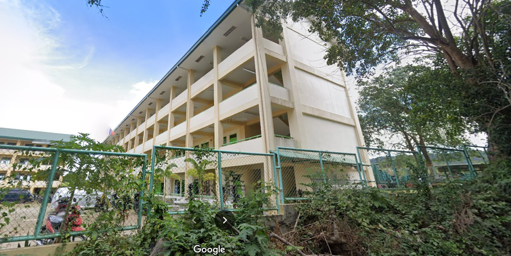

HISTORY
It was in the year 2013, when an intensive survey which was done as an initial step for the
preparation for the implementation of the k to 12 additional years known as senior high school.
It was conducted to specify the strands the students wanted to choose. It was followed by the Orientation and Career
Guidance. The orientation aims to lead students to the tracks they will register into. Parents' Orientation was also
done to introduce the new curriculum and to ask for their support to the K to 12 Program.

After conducting an orientation to Grade 10 students, a parents teacher conference was also done to formally intoduce
the K to 12 Curriculum and Lian Senior High School Program. Three hundred twenty-four parents attended including
School Head, PTA Officers, Grade 10 Advisers, teachers, with the presensence of the District Supervisor. A Municipal Summit
on Senior High School was also held at LINAHIS in 2015. It was attended by the different School Heads from elementary
and secondary schools in Lian, teachers from the District and Local Officials. The support of inportant personalities was very
evidence as the Municipal Mayor Isigani I. Bolompo, Education Commitee Chairman Exequil Bonuan and the Laborious
District Supervisor, Ronald Sevilla took part in the summit.
One of the programs initiated for the opening of the Senior High School Program was the Walk for a Cause with Zumba
which was held on February 20, 2016. DepEd personnel including teachers and school heads of both private of both private
and public schools, local officials, LGUs, private organizations, sectors and individuals joined the activity. It was headed by
Mrs. Melanie V. Torres and Mrs. Irene M. Caringal, faculty, students and PTA of LINAHIS and Matabungkay National High
School (MANAHIS). The activity was supported by the Local Government and DepEd which was evident through the
presence of Dr. Ronald Sevilla, District Supervisor and Honorable Isigani I. Bolompo, Municapal Mayor of Lian. And the
said fund raising activity proceeds was used to acquire tools and other equipment needed for Senior High School.
Teachers of LINAHIS and MANAHIS played an important role in the commucating with public and private sectors of the
government to seek support in the implementation of the Senior High School Program.
In order to find the best ways for the success of the opening of senior high school everyone worked hard enough in the
early registration up to the pre enrollment. The pre-enrolment helped learner come Up with the most rational and critical
decision which is choosing the right track consedering talents, skills and abilities given by God.
Mrs. Melanie V. Torres carefully managed every details of the preparations for 100% success the she single-handedly
done as the school focal person.
With her grip in hadling both Lian Junior High Schools, she is just precious as a gem to teachers and every student.
Regardless of the distance of the two buildings, she wholeheartedly managed them with passion providing guides and
reminders and to the compassionate teachers of the said schools.
With her experiences, abilities, providing the best that she can be, she's really one of a kind. Indeed, a precious gem that
is hard to find
Mrs. Melanie V. Torres attended meetings, seminars and advance courses were also a paart of preparing for the Senior
High School Program in order to equip herself in the best in managing the Senior High School.
Presently, there are additional buildings provided by Deped that helped a lot in creating a exellent venue for each
students to learn in the best way they can have with aid of highly trained faculty members. Mental and physical training
among students has have paved way for division and regional competitions thus achieving high honors that showed
their excellence.
VISION
We dream of Filipinos who passionately
love their country and whose values and
competencies enable them to realize
their full potenatial and contribute
meaningfully to building the nation.
As a learner-centered public institution
the Department of Education continuosly
improves itself to better serve its
stakeholders.
MISSION
To protect and promote the right of
every Filipino to quality, equitable
culture-based, and complete basic
education where: Students learn in
a child-friendly, gender-sensitive,
safe, and motivating environment.
Teachers facilitate learning and constatnly nurture
every learner.
Administrators and staff, as
stewards of the institution, ensure an
enabling and supportive environment for effective
learning to happen.
Family, community,
and other stakeholders are actively engaged
and share
responsibility for developing life-long learners.